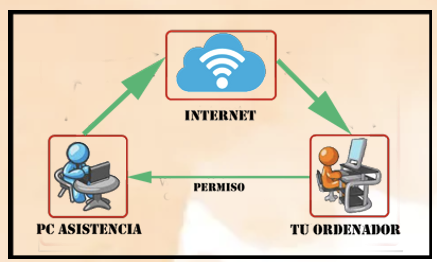

ASISTENCIA REMOTA
¿Qué es?
El software de asistencia remota permite a los técnicos de TI
acceder a otro ordenador o dispositivo de forma remota para
prestar asistencia. La conexión remota permite al técnico ver la
pantalla del dispositivo remoto en su propia pantalla en tiempo
real y, en la mayoría de los casos, poder tomar el control del
dispositivo remoto para solucionar problemas y realizar otras
tareas. La asistencia remota aprovecha el software de acceso
remoto (o remote desktop) para dar al técnico acceso instantáneo
al dispositivo remoto desde cualquier lugar y en cualquier
momento. Esto significa que pueden prestar asistencia remota sin
tener que desplazarse hasta el dispositivo.

Tipos de software de asistencia remota
El software de asistencia remota puede clasificarse generalmente
en dos categorías:
-
Soporte remoto desatendido: El acceso desatendido
significa que el técnico puede conectarse remotamente al
dispositivo del punto final incluso sin que haya un usuario final
presente. Las plataformas de asistencia remota lo hacen posible
haciendo que el equipo de TI despliegue una aplicación de agente
en todos los ordenadores que gestiona. Una vez instalado el
agente, un miembro del equipo de TI puede conectarse al ordenador
remoto al que desea acceder. Al tener el agente instalado en el
ordenador remoto, los técnicos de TI pueden acceder de forma
remota a los ordenadores en cualquier momento, con o sin que
alguien utilice activamente el ordenador. Esto permite dar soporte
a los ordenadores fuera del horario de oficina o cuando el
endpoint no está en uso.
-
Soporte Remoto Supervisado: También conocido como soporte
a la carta, o soporte ad-hoc, el soporte atendido permite a los
técnicos acceder a un dispositivo en el momento en que el usuario
final solicita asistencia. Una vez conectado, el técnico puede
prestar asistencia para resolver el problema. A diferencia del
acceso desatendido, no es necesario realizar una configuración
previa para el acceso atendido. Como el usuario final está
presente, puede ayudar al técnico a establecer una conexión remota
con su dispositivo. Esto se puede hacer de varias maneras, pero un
método común es hacer que el usuario final ejecute la aplicación
de la herramienta de soporte remoto para generar un código de
sesión único, que el usuario da al técnico para que pueda
conectarse al dispositivo y tomar el control. El acceso presencial
permite a los profesionales del servicio de asistencia técnica
prestar asistencia a cualquier dispositivo siempre que el usuario
final esté presente. Esto significa que pueden prestar asistencia
remota a los dispositivos gestionados y a los personales.
La diferencia entre atendido y desatendido viene determinada por
la presencia de un usuario final en el dispositivo remoto mientras
el técnico de TI presta asistencia remota. La funcionalidad de
cada tipo de solución también difiere.
¿Cómo funciona la asistencia remota?
La Asistencia Remota de Windows es una herramienta similar a
TeamViewer, basada en Escritorio Remoto, que nos permite pedir
ayuda a un contacto mediante un fichero generado por ella misma
llamado «Invitation. msrcincident» que, al abrirlo, se conecta
directamente al equipo que nos ha solicitado la ayuda.